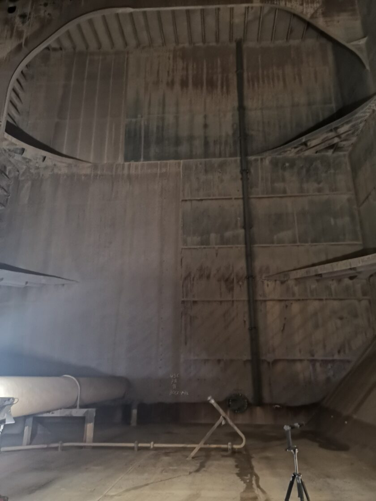
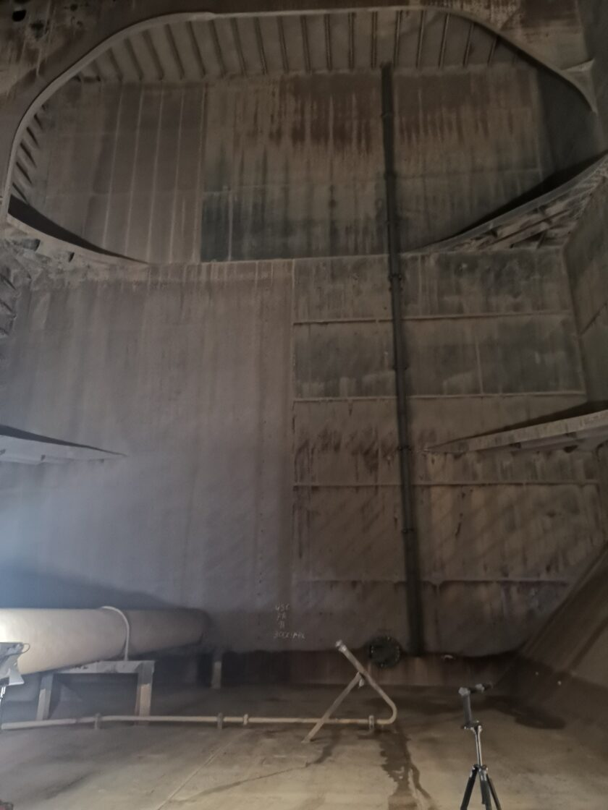

C-Bird is the world’s only Class-approved specialist which can conduct hull gauging measurements in accordance with IACS Class rules. Using cutting edge robotics, we can undertake the UTM/gauging element of a special survey without rafting, staging or human entry.
C-Bird is Class-approved to provide close-up surveys in accordance with IACS Class rules. Combining reliable, proven drone technology with an industry-leading track record, close-up surveys can be carried out without staging, rafting or human confined space entry to the vessel’s tanks.
Taking drone technology solutions successfully from concept to deployment in harsh industrial environments is a hugh task. We provide technical consultancy across the technology lifecycle, from hardware developers to program operators. We work closely with all stakeholders to establish an accepted survey process and add value for our customers.

 
